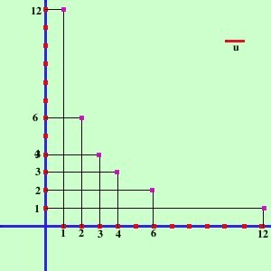
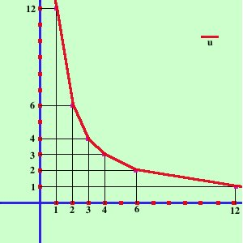

|
Proviamo ad esempio a disegnare la relazione fra i lati dei rettangoli che hanno area 12 Scelgo 12 perche' ha molti divisori quindi ottengo vari valori interi: potrei prendere qualunque altro numero pero' dovrei lavorare con i decimali o le frazioni Chiamiamo la base del rettangolo x e l'altezza y Limitiamoci a trovare solo i lati interi per semplicita' se l'area e' 12 le possibilita' per x e y sono 
 ora se congiungo i punti ottenuti con una curva continua ottengo il ramo superiore dell'iperbole equilatera riferita ai propri assi |